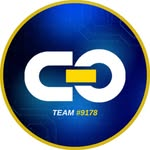
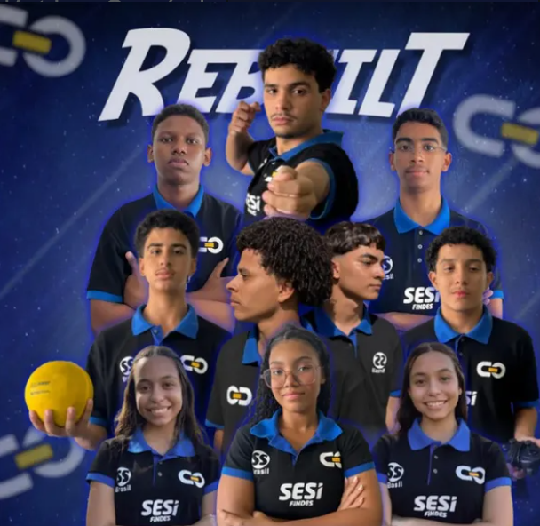

Programação
02 PROGRAMADORESO código dá vida ao robô e conecta estratégia, sensores e controle.

FRC #9178 Instagram ↗FIRST ROBOTICS COMPETITION
Tecnologia, inovação e trabalho em equipe construindo o futuro através da robótica.

A Cyber One é uma equipe brasileira participante da FIRST Robotics Competition, formada por estudantes, mentores e parceiros do Espírito Santo.
Estamos localizados no SESI-CIVIT, na cidade da Serra, Espírito Santo. Unimos engenharia, criatividade, liderança e impacto social para desenvolver robôs competitivos e inspirar novas pessoas a conhecerem a tecnologia.
Conheça nossas áreas →Atualmente, somos 10 integrantes divididos em áreas que trabalham juntas para fazer a Cyber One evoluir dentro e fora da arena.
Cada área tem uma função essencial. Juntas, elas transformam planejamento, conhecimento e criatividade em um time completo.
O código dá vida ao robô e conecta estratégia, sensores e controle.
O sistema elétrico garante energia, segurança e precisão em cada movimento.
Da ideia ao chassi, a mecânica transforma estratégia em estrutura.
O cérebro do time organiza, comunica e faz a equipe chegar mais longe.
Mais do que construir robôs, construímos experiências, amizades e caminhos para o futuro.
O código que representa a Cyber One em cada arena, projeto e conquista.
Uma equipe capixaba levando ciência, tecnologia e criatividade cada vez mais longe.
Uma das equipes precursoras do Espírito Santo e do Brasil no movimento de robótica.
Cada temporada traz novos desafios, aprendizados e motivos para continuar crescendo.
Com apoio do SESI/SENAI, estudantes, mentores e parceiros constroem o próximo passo do futuro.
Estreia da Cyber One na competição nacional, com viagem a Brasília e a primeira vitória da equipe.
Período de treinos, divulgação e aprimoramento contínuo do robô.
Projetos, vitórias e participação na ESX, um dos maiores eventos de inovação do Espírito Santo.
Na etapa nacional, a equipe alcançou a 44ª posição no ranking geral e participou de eventos como a MECSHOW.
Representamos o Espírito Santo novamente em Brasília e encerramos o torneio na 17ª posição.
Seguimos construindo, competindo e levando a energia da Cyber One cada vez mais longe.
O apoio de cada parceiro torna possível transformar educação e tecnologia em impacto real.
FAÇA PARTE DA JORNADA
Quer construir o futuro com a gente? Entre em contato e descubra como participar, apoiar ou acompanhar a Cyber One.
Fale com a Cyber One ↗